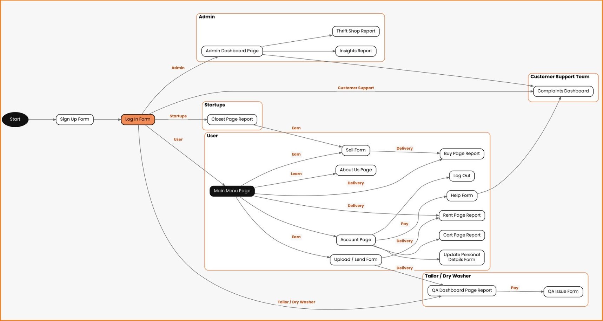
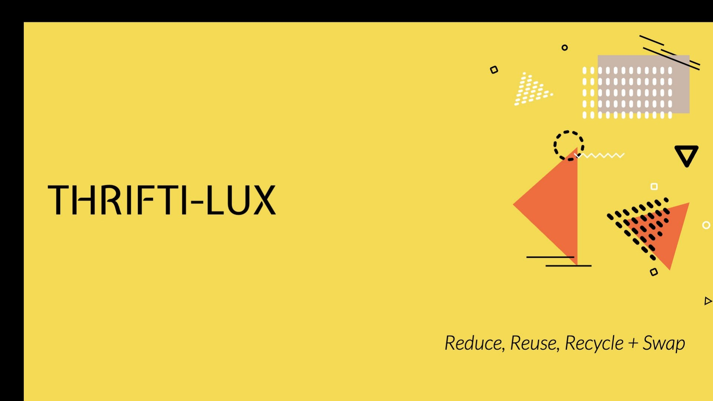
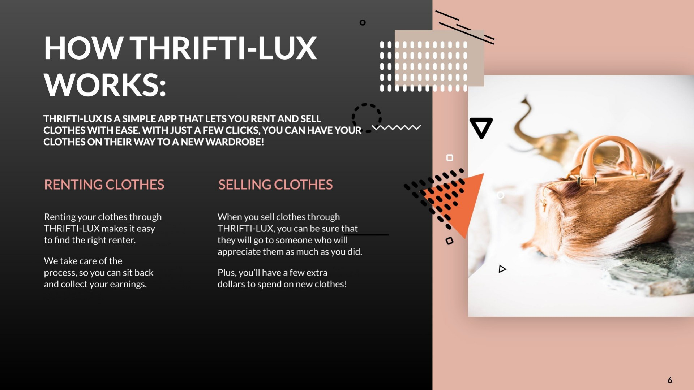
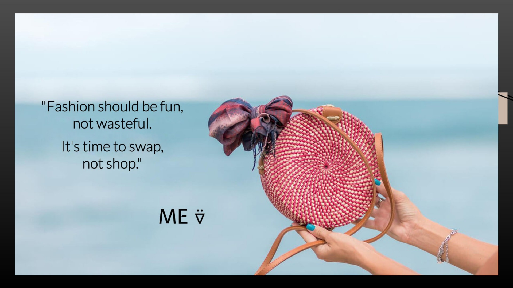
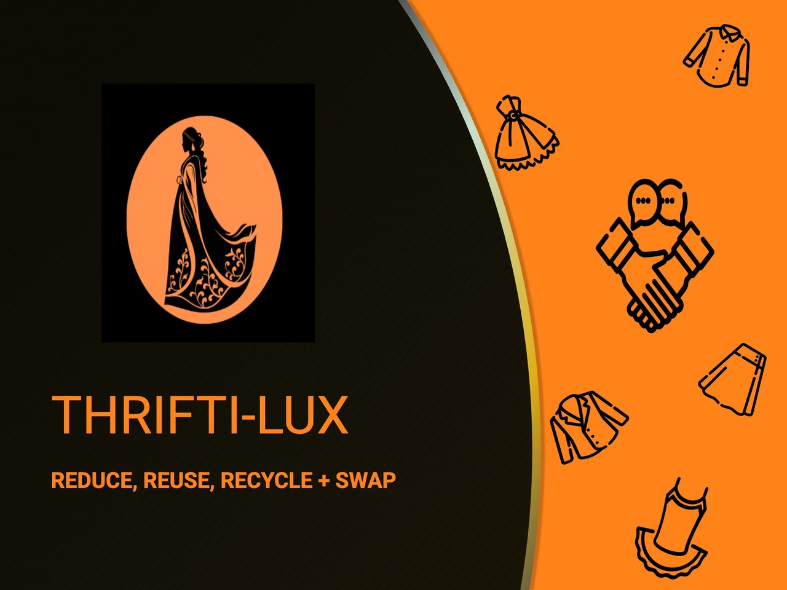
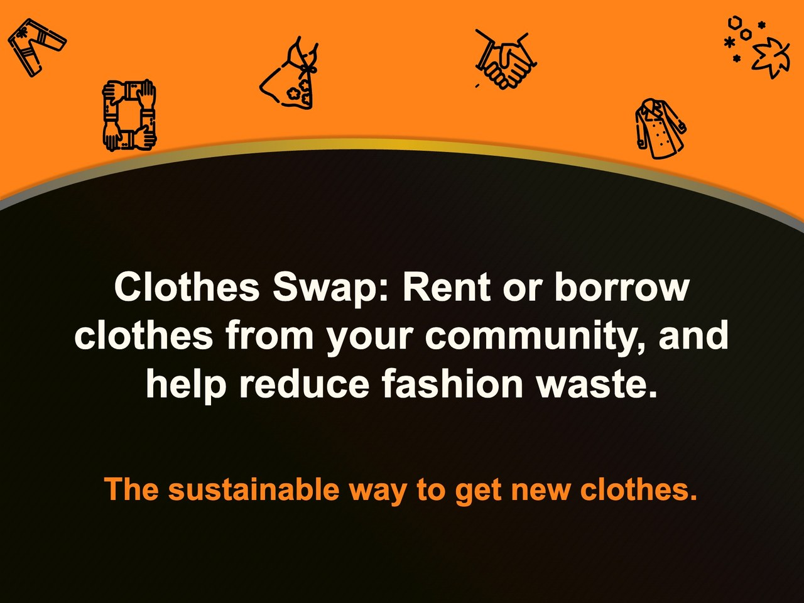
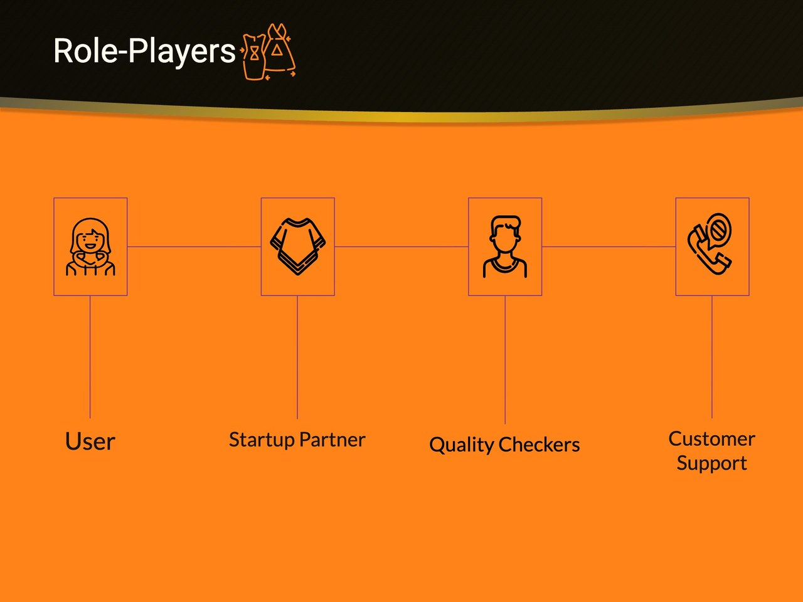
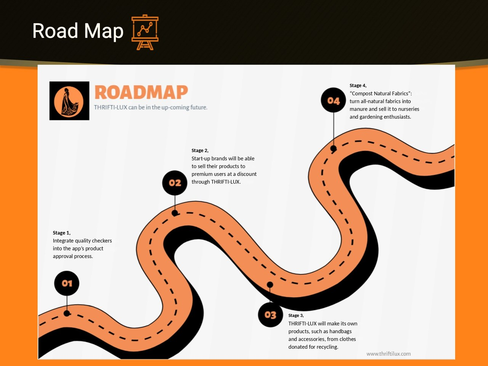

Rent or lend
Upload clothes you wear only occasionally. Thrifti-Lux handles finding the right person and the delivery, and you collect your earnings.
Reduce, Reuse, Recycle + Swap
Thrifti-Lux is an app concept that lets people rent out, sell and swap clothes within their community, so great outfits get worn more often and fewer clothes end up as waste.
I created three presentations for this imagined product: an Ideathon presentation that sets out the idea, the audience and the ways the product earns; a story-led pitch deck; and an Appathon presentation that covers the people involved, the app flow and a four-stage roadmap.
Occasion wear is expensive, yet it is worn only occasionally.
Clothes Swap: rent or borrow clothes from your community, and help reduce fashion waste. It is the sustainable way to get new clothes.
Fashion should be fun, not wasteful. It's time to swap, not shop.
Upload clothes you wear only occasionally. Thrifti-Lux handles finding the right person and the delivery, and you collect your earnings.
Pass on clothes you have outgrown to someone who will love them as much as you did, and earn a little to spend on something new.
Get designer and occasion wear at a fraction of the price, instead of paying full price for brands.
Every item is reviewed by quality checkers, such as a tailor or dry washer, before it reaches its next wearer.
Access stylish clothing at a rentable, budget-friendly price.
Declutter your closet while earning money.
Individuals attending weddings, parties and other special occasions.
Professionals attending conferences or formal events.
Fashion-conscious individuals seeking unique outfits.
People looking to declutter their closets and sell their gently used fancy wear.
A small commission on every rental transaction made through the platform.
Featured or sponsored listings in exchange for a small fee.
Members enjoy perks such as reduced delivery fees, cashbacks and even a free dress rental on registering.
Designer clothes should be accessible to everyone. Thrifti-Lux aims to cut waste, save people money and reduce the need for fast fashion, through a platform that is simple and sustainable.
| Role | What they do |
|---|---|
| User | Signs up, then rents, lends, sells or buys clothes, pays, and tracks delivery. |
| Startup partner | Startup brands list their own products in the closet and reach premium users. |
| Quality checker | Tailors and dry washers review items on a QA dashboard and raise issues when needed. |
| Customer support | Handles help requests and complaints through a complaints dashboard. |
After sign-up and login, each role is taken to its own screens. Users reach a main menu to upload or lend, sell, buy and learn about Thrifti-Lux, with earn, pay and delivery steps connecting each journey.

Thrifti-Lux grows in four stages, and each stage builds on the one before it.
| Stages | Milestone |
|---|---|
| Stage 1 | Bring quality checkers into the app's product approval process. |
| Stage 2 | Startup brands sell their products to premium users at a discount through Thrifti-Lux. |
| Stage 3 | Thrifti-Lux makes its own products, such as handbags and accessories, from clothes donated for recycling. |
| Stage 4 | "Compost Natural Fabrics": turn all-natural fabrics into manure and sell it to nurseries and gardening enthusiasts. |






